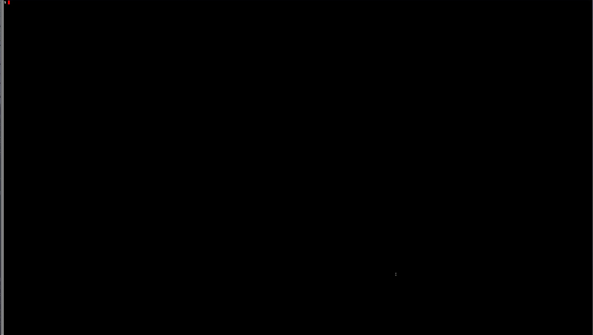

Use your terminal as a (non-ugly) clock
View the project on GitHub salewski/ads-clock
2016-06-12): ads-clock-0.1.0.tar.gzads-clock' project home pageThe ads-clock project provides the 'ads-clock' program, which allows you to use your terminal as a clock.
Got a laptop that you plug into a much larger display? Rather than close the lid on the laptop or otherwise abandon it while working on the larger display, throw an ads-clock on that bad boy.
Here's an animated GIF (created from a screencast in an xterm stretched across most of the screen) on my 3200x1800 laptop display:

Depending on the screen on which you are viewing the above animated image, you may or may not be able to see the tiny text typed at the console at the beginning of the loop. It is just the ads-clock command invoked with no arguments. The end of the loop shows quitting out of the clock by hitting CTRL-C (which sends a SIGINT to the ads-clock program).
The ads-clock program was written by Alan D. Salewski.
The GitHub project page is located at https://github.com/salewski/ads-clock.